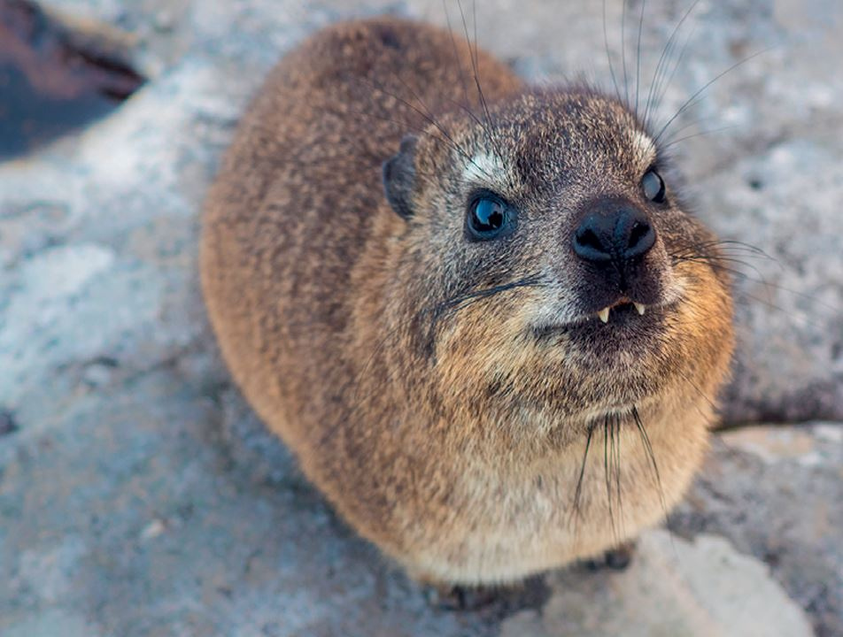
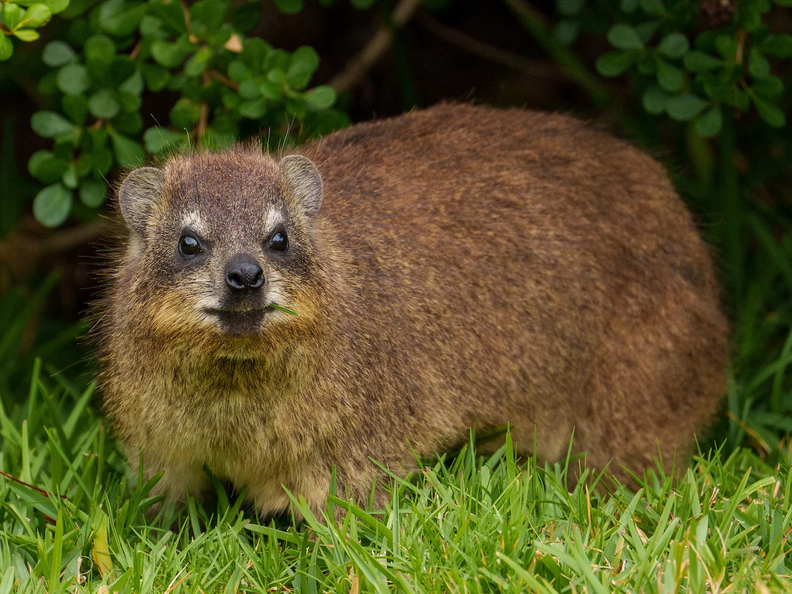

Damani jsou jedinečná zvířata se specifickými potřebami a nároky na péči. V této sekci se dozvíte více o jejich povaze, zdraví, přirozeném chování a každodenním životě. Představíme vám, jaké podmínky potřebují ke spokojenému a zdravému životu.
Povaha a potřeby damanů
Damani jsou zajímaví, společenští a velmi ostražití savci. Přirozeně žijí ve skupinách, ve kterých mezi sebou vytvářejí sociální vazby a komunikují pomocí různých zvuků. Jsou aktivní především během dne, rádi odpočívají na slunných místech a pohybují se ve skalnatém prostředí.
Potřebují dostatek prostoru, možnost šplhání, úkryty a vhodné podmínky napodobující jejich přirozené prostředí. Nejsou to běžní domácí mazlíčci a nejsou vhodní k mazlení ani k běžnému kontaktu s malými dětmi.
Zdraví a prevence
Pro zdravý a spokojený život damanů je důležitá pravidelná veterinární péče a správné životní podmínky. Zaměřujeme se především na:
Při jakýchkoliv změnách chování nebo zdravotního stavu je důležité obrátit se na veterinárního lékaře se zkušenostmi s exotickými savci.
Péče a každodenní režim
Správná péče o damany vyžaduje znalosti jejich přirozených potřeb a pravidelnou pozornost.
Výběh by měl obsahovat skalní prvky, vyvýšená místa, úkryty a dostatek prostoru pro přirozený pohyb. Důležité je také vhodné teplotní prostředí.
Damani rádi šplhají, prozkoumávají okolí a komunikují s ostatními členy skupiny. Proto je důležité prostředí pravidelně obohacovat o nové podněty.
Základem potravy je rostlinná strava, především tráva, listy, byliny a další vhodné rostliny. Konkrétní jídelníček musí odpovídat druhu damana a doporučení odborníka.
Damani jsou společenská zvířata, a proto je důležité respektovat jejich potřebu kontaktu s jedinci vlastního druhu.
Pro koho se damani hodí a nehodí?
Odborná zoologická zařízení, zkušené chovatele exotických savců, Lidi se znalostmi o jejich přirozeném prostředí.
Začínající chovatele bez odborných znalostí, rodiny hledající mazlivého domácího mazlíčka ,domácnosti s nedostatkem prostoru.

